Normalize intensities across batches
Joyce Hsiao
Last updated: 2018-02-15
Code version: bad6a88
Introduction/summary
The experimental design for our study is commonly known as “incomplete block design”. The individuals are grouped into combinations of two, and no two individuals appear in the same combination twice. In our study, combination refers to C1 plates, so the combination of cell lines on each C1 plate is thereofre unique.
In notations,
\(N\): number of individuals \(k\): combination size (in our case, each combinatino is a plate) \(B\): number of plates \(r_i\): number of replicates for individual \(i\) in the entire design
For now assume \(r_i=r\) for all individuals. Then, in our design each individual replicate can pair up with \(N-1/k-1\) possible number of individuals. And since the pairs consist of unique individuals, so there can be \(N-1/k-1\) possible number of replicates for each individual. We have \(N=6, k=2\) which gives 5 replicates per individual cell line.
Our design is in principle balanced, i.e., each pair of individuals occurs together one time in the study. But at the end of the experiment, we collected an additional C1 plate on the first pair of individuals processed. This gives us a total of 16 plates (pairs or blocks).
I performed analysis of variance for intensity data using the following model
\[ y_{ij} = \mu + \tau_i + \beta_j + \epsilon_{ij} \] where \(i = 1,2,..., N\) and \(j = 1,2,..., B\). The parameters are estimated under sum-to-zero constraints \(\sum \tau_i = 0\) and \(\sum \beta_j = 0\).
Note that in this model 1) not all \(y_{ij}\) exists due to the incompleteness of the design, 2) the effects of individual and block are nonorthogonal, 3) the effects are additive due to the block design.
We implemented the above model using the ibd package and
Estimate prop of variance explained by individual and plate.
Estimate mean effect from each plate, correct from the intensity data
TO DO: Apply batch correction prior to background correction??
Additional analysis: After correcting for plate effect, I discovered that there may be a position effect for the image intensites, such that some positions (by image position) produce images that are lower in intensities within plates. So far there’s no particular pattern associated with the trend and the tendency for position difference is stronger for red than for green.
Load data
\(~\)
library(data.table)
library(dplyr)
library(ggplot2)
library(cowplot)
library(wesanderson)
library(RColorBrewer)
library(Biobase)
library(scales)
# note that ibd is not in the fucci-seq conda environment
library(ibd)Read in filtered data.
df <- readRDS(file="../data/eset-filtered.rds")
pdata <- pData(df)
fdata <- fData(df)RFP variation
RFP
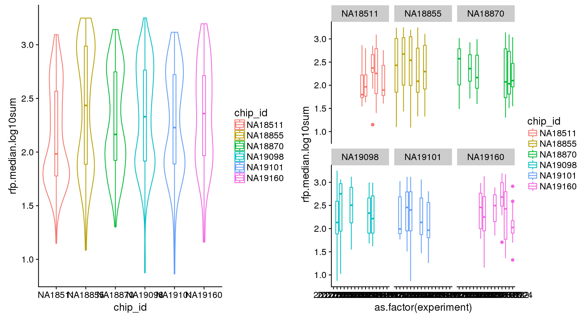
ANOVA: No signficant variation due to individual cell lines of origin (p<.01), but signification variation due to experiment. Based on the contrast tests for the plate effect, “20170907” and “20170924” are the two plates that differ the most from the others. Based on the contrast tests for the individual effect, “NA18511” differs the most from the average sample intensities.
ibd_rfp <- aov.ibd(rfp.median.log10sum~factor(chip_id)+factor(experiment),data=pdata)
# make contrast matrix for plates
# each plate is compared to the average
n_plates <- uniqueN(pdata$experiment)
contrast_plates <- matrix(-1, nrow=n_plates, ncol=n_plates)
diag(contrast_plates) <- n_plates-1
ibd_rfp_exp <- aov.ibd(rfp.median.log10sum~factor(chip_id)+factor(experiment),
data=pdata, spec="experiment", contrast=contrast_plates)
ibd_rfp_exp_est <- ibd_rfp_exp$LSMEANS
# make contrast matrix for individuals
# each individual is compared to the average
n_inds <- uniqueN(pdata$chip_id)
contrast_inds <- matrix(-1, nrow=n_inds, ncol=n_inds)
diag(contrast_inds) <- n_inds-1
ibd_rfp_chipid <- aov.ibd(rfp.median.log10sum~factor(chip_id)+factor(experiment),
data=pdata, spec="chip_id", contrast=contrast_inds)Substract plate effect from the raw estimates.
pdata$rfp.median.log10sum.adjust <- pdata$rfp.median.log10sum
ibd_rfp_exp_est$experiment <- as.character(ibd_rfp_exp_est$experiment)
pdata$experiment <- as.character(pdata$experiment)
exps <- unique(pdata$experiment)
for (i in 1:uniqueN(exps)) {
exp <- exps[i]
ii_exp <- which(pdata$experiment == exp)
est_exp <- ibd_rfp_exp_est$lsmean[which(ibd_rfp_exp_est$experiment==exp)]
pdata$rfp.median.log10sum.adjust[ii_exp] <- (pdata$rfp.median.log10sum[ii_exp] - est_exp)
} 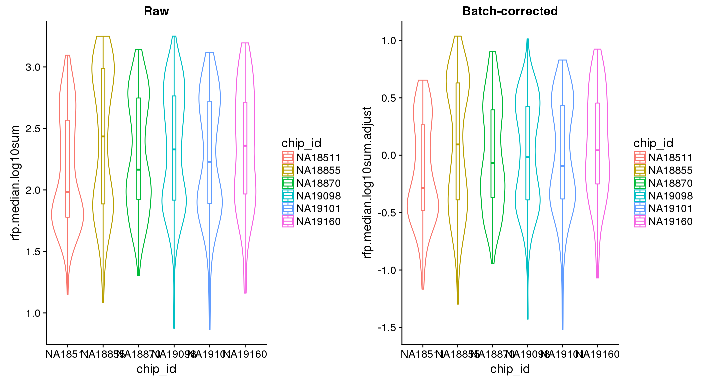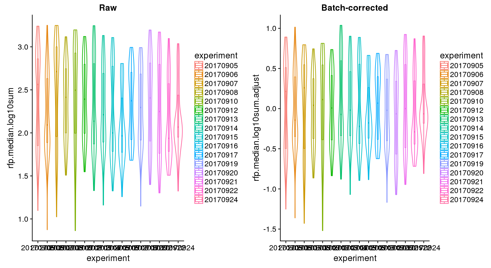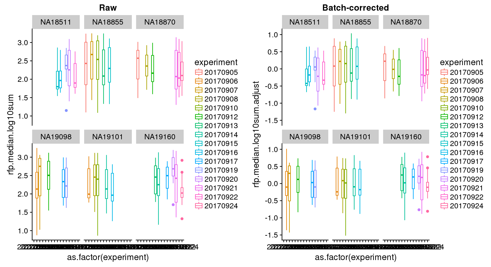
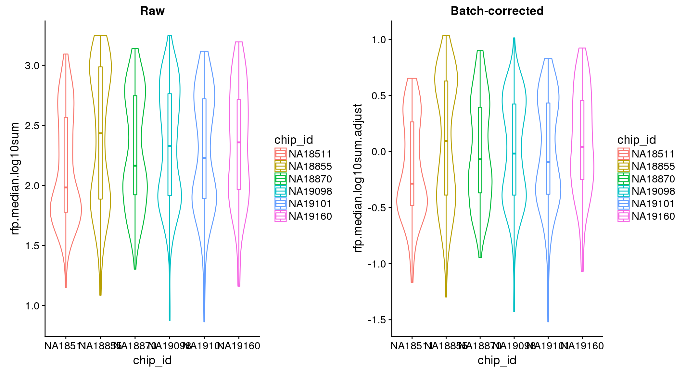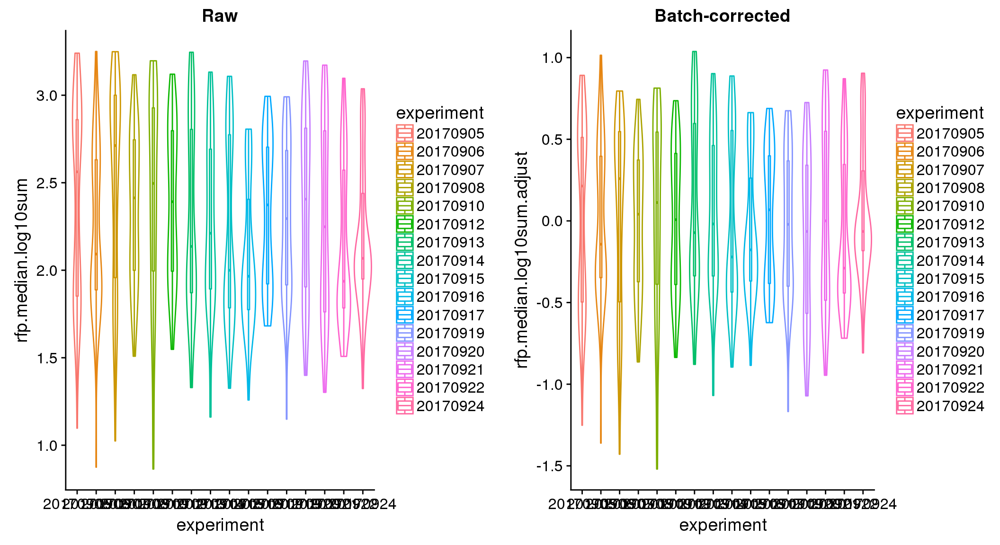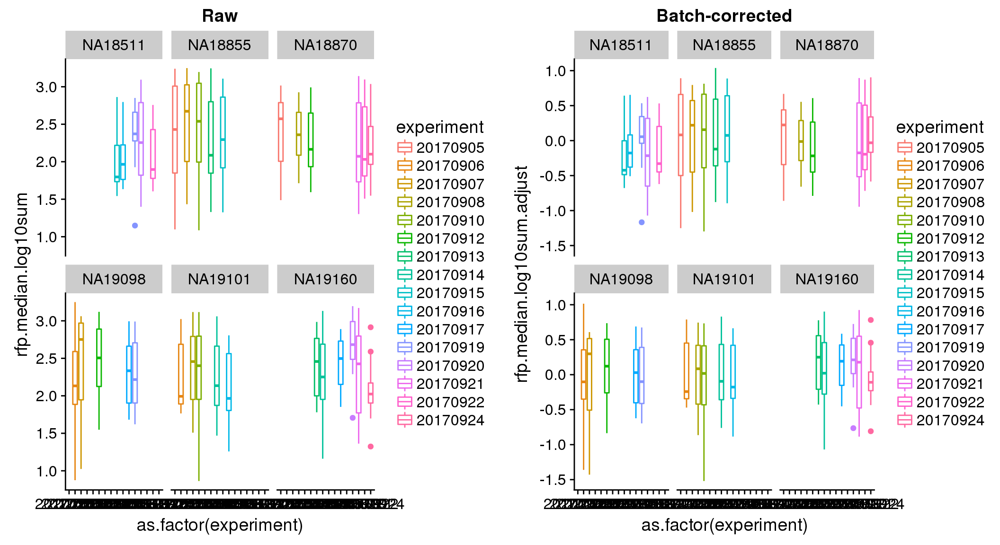
ANOVA on adjusted data show no significant batch/block effect.
aov.ibd(rfp.median.log10sum.adjust~factor(chip_id)+factor(experiment),data=pdata)$ANOVA.table
Anova Table (Type III tests)
Response: rfp.median.log10sum.adjust
Sum Sq Df F value Pr(>F)
(Intercept) 0.766 1 3.2144 0.07331 .
factor(chip_id) 3.273 5 2.7469 0.01792 *
factor(experiment) 0.000 15 0.0000 1.00000
Residuals 230.886 969
---
Signif. codes: 0 '***' 0.001 '**' 0.01 '*' 0.05 '.' 0.1 ' ' 1GFP variation
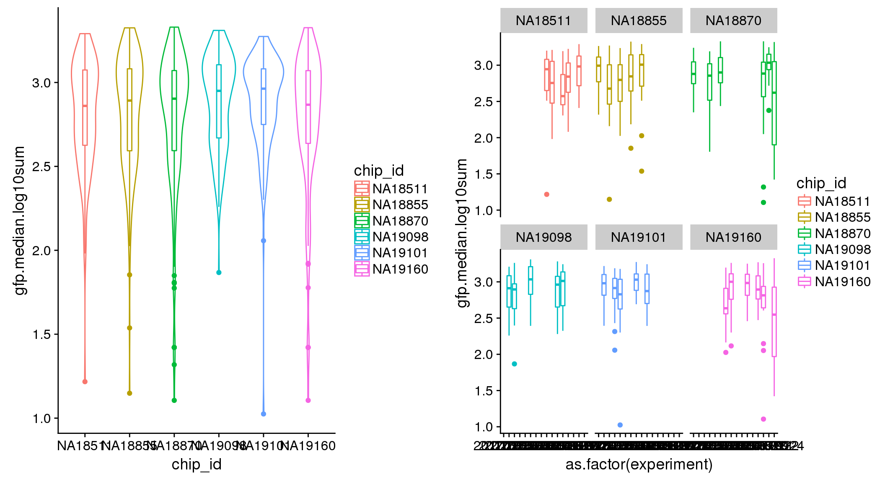
ANOVA: No signficant variation due to individual cell lines of origin (p<.01), but signification variation due to experiment. Based on the contrast tests for the plate effect, “20170907” “20170912” “20170922” “20170924” are the two plates that differ the most from the others. Based on the contrast tests for the individual effect, “NA18511” differs the most from the average sample intensities.
ibd_gfp <- aov.ibd(gfp.median.log10sum~factor(chip_id)+factor(experiment),data=pdata)
# make contrast matrix
n_plates <- uniqueN(pdata$experiment)
contrast_plates <- matrix(-1, nrow=n_plates, ncol=n_plates)
diag(contrast_plates) <- n_plates-1
ibd_gfp_exp <- aov.ibd(gfp.median.log10sum~factor(chip_id)+factor(experiment),
data=pdata, spec="experiment", contrast=contrast_plates)
ibd_gfp_exp_est <- ibd_gfp_exp$LSMEANS
n_inds <- uniqueN(pdata$chip_id)
contrast_inds <- matrix(-1, nrow=n_inds, ncol=n_inds)
diag(contrast_inds) <- n_inds-1
ibd_gfp_chipid <- aov.ibd(gfp.median.log10sum~factor(chip_id)+factor(experiment),
data=pdata, spec="chip_id", contrast=contrast_inds)Substract plate effect from the raw estimates.
pdata$gfp.median.log10sum.adjust <- pdata$gfp.median.log10sum
ibd_gfp_exp_est$experiment <- as.character(ibd_gfp_exp_est$experiment)
pdata$experiment <- as.character(pdata$experiment)
exps <- unique(pdata$experiment)
for (i in 1:uniqueN(exps)) {
exp <- exps[i]
ii_exp <- which(pdata$experiment == exp)
est_exp <- ibd_gfp_exp_est$lsmean[which(ibd_gfp_exp_est$experiment==exp)]
pdata$gfp.median.log10sum.adjust[ii_exp] <- (pdata$gfp.median.log10sum[ii_exp] - est_exp)
} 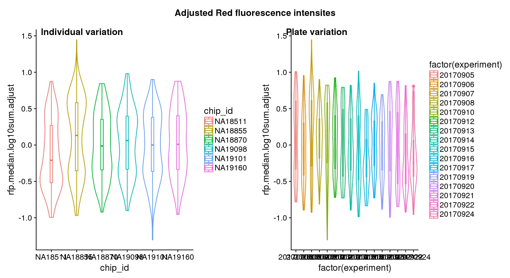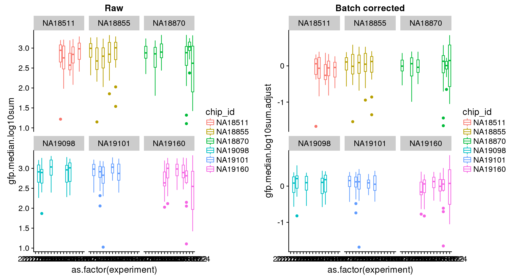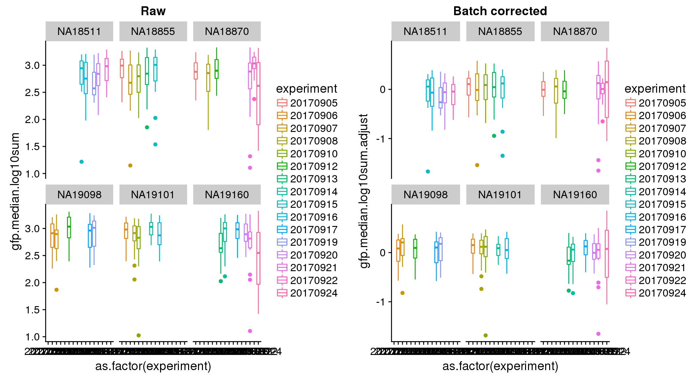
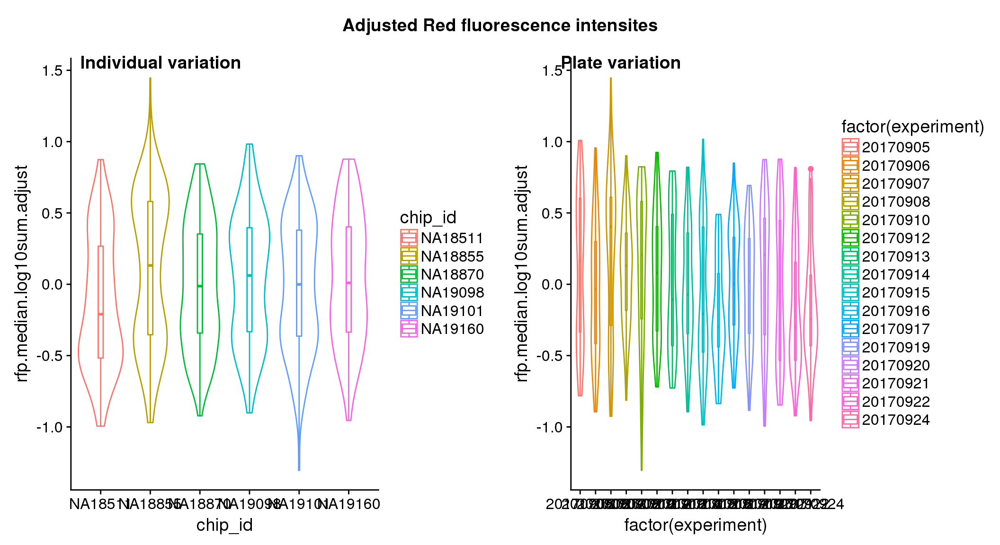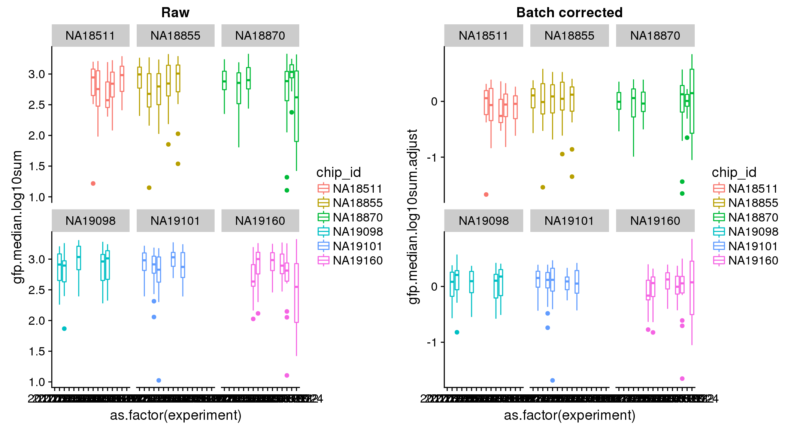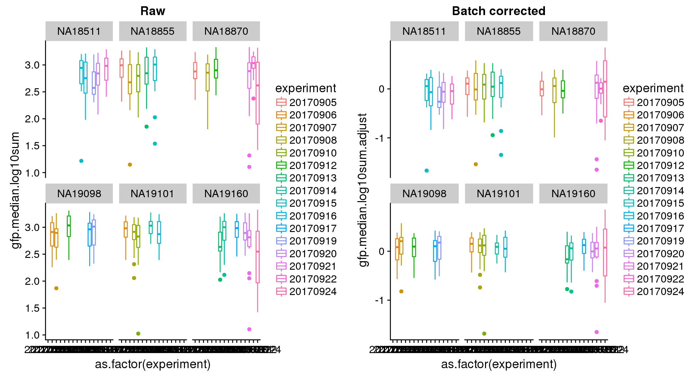
ANOVA on corrected data showed no significant plate effect.
aov.ibd(gfp.median.log10sum.adjust~factor(chip_id)+factor(experiment),data=pdata)$ANOVA.table
Anova Table (Type III tests)
Response: gfp.median.log10sum.adjust
Sum Sq Df F value Pr(>F)
(Intercept) 0.317 1 2.8763 0.09022 .
factor(chip_id) 1.419 5 2.5737 0.02529 *
factor(experiment) 0.000 15 0.0000 1.00000
Residuals 106.879 969
---
Signif. codes: 0 '***' 0.001 '**' 0.01 '*' 0.05 '.' 0.1 ' ' 1DAPI variation
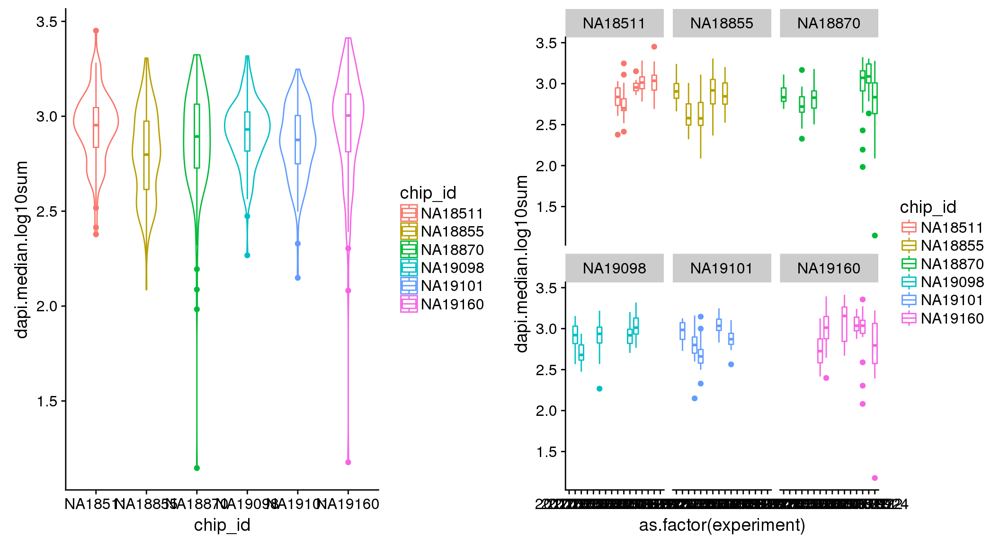
ANOVA: No signficant variation due to individual cell lines of origin (p<.01), but signification variation due to experiment. Based on the contrast tests for the plate effect, the plates are quite different from each other and there are 9 plates that differ from the average (“20170907” “20170908” “20170910” “20170914” “20170919” “20170920” “20170921” “20170922” “20170924”). Based on the contrast tests for the individual effect, “NA19101” differs the most from the average sample intensities.
ibd_dapi <- aov.ibd(dapi.median.log10sum~factor(chip_id)+factor(experiment),data=pdata)
# make contrast matrix
n_plates <- uniqueN(pdata$experiment)
contrast_plates <- matrix(-1, nrow=n_plates, ncol=n_plates)
diag(contrast_plates) <- n_plates-1
ibd_dapi_exp <- aov.ibd(dapi.median.log10sum~factor(chip_id)+factor(experiment),
data=pdata, spec="experiment", contrast=contrast_plates)
ibd_dapi_exp_est <- ibd_dapi_exp$LSMEANS
n_inds <- uniqueN(pdata$chip_id)
contrast_inds <- matrix(-1, nrow=n_inds, ncol=n_inds)
diag(contrast_inds) <- n_inds-1
ibd_dapi_chipid <- aov.ibd(dapi.median.log10sum~factor(chip_id)+factor(experiment),
data=pdata, spec="chip_id", contrast=contrast_inds)Substract plate effect from the raw estimates.
pdata$dapi.median.log10sum.adjust <- pdata$dapi.median.log10sum
ibd_dapi_exp_est$experiment <- as.character(ibd_dapi_exp_est$experiment)
pdata$experiment <- as.character(pdata$experiment)
exps <- unique(pdata$experiment)
for (i in 1:uniqueN(exps)) {
exp <- exps[i]
ii_exp <- which(pdata$experiment == exp)
est_exp <- ibd_dapi_exp_est$lsmean[which(ibd_dapi_exp_est$experiment==exp)]
pdata$dapi.median.log10sum.adjust[ii_exp] <- (pdata$dapi.median.log10sum[ii_exp] - est_exp)
}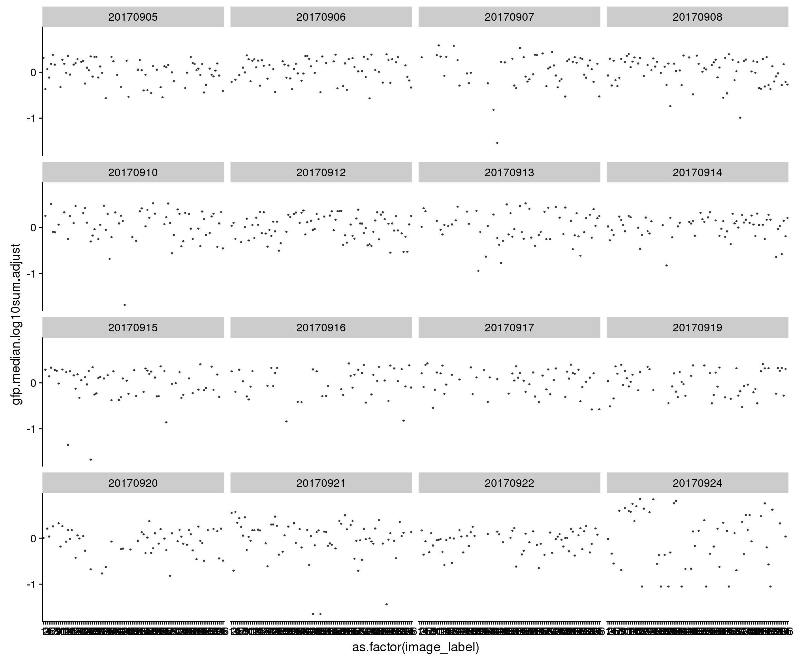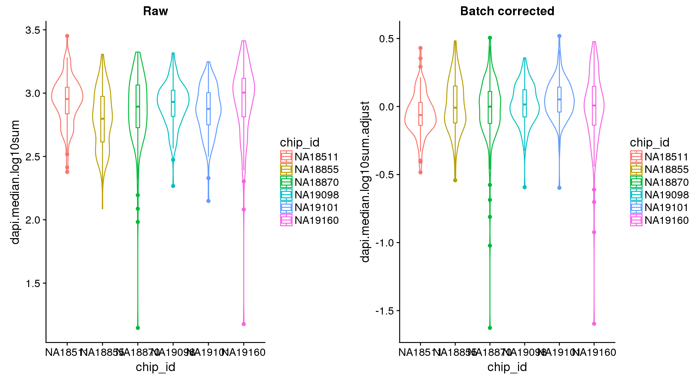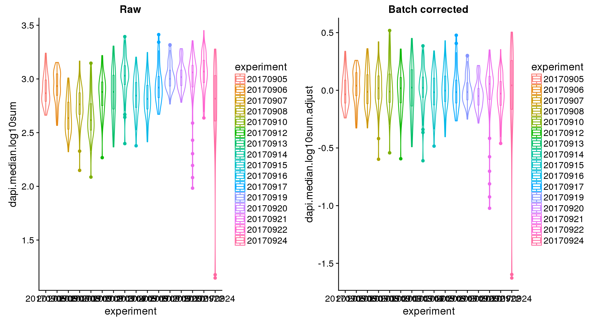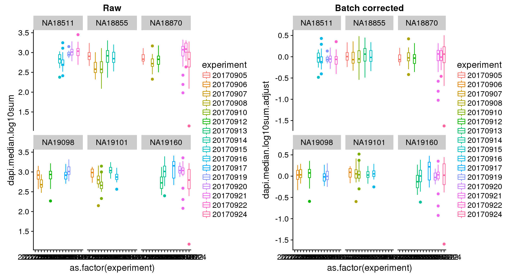
ANOVA on the batch-corrected DAPI shows no significant plate effect.
aov.ibd(dapi.median.log10sum.adjust~factor(chip_id)+factor(experiment),data=pdata)$ANOVA.table
Anova Table (Type III tests)
Response: dapi.median.log10sum.adjust
Sum Sq Df F value Pr(>F)
(Intercept) 0.087 1 2.2619 0.13292
factor(chip_id) 0.531 5 2.7583 0.01752 *
factor(experiment) 0.000 15 0.0000 1.00000
Residuals 37.275 969
---
Signif. codes: 0 '***' 0.001 '**' 0.01 '*' 0.05 '.' 0.1 ' ' 1bi-axial distribution
There seems to be a decrease in between-sample point distance in the data corrected for batch effect.
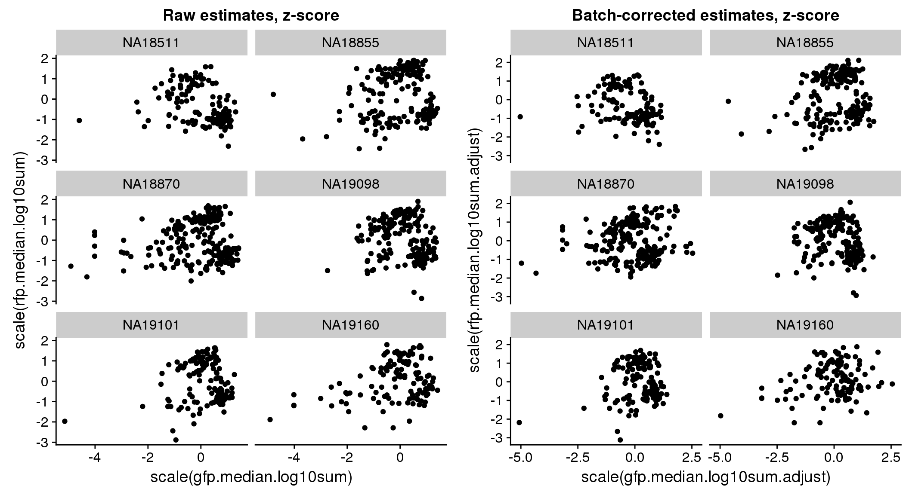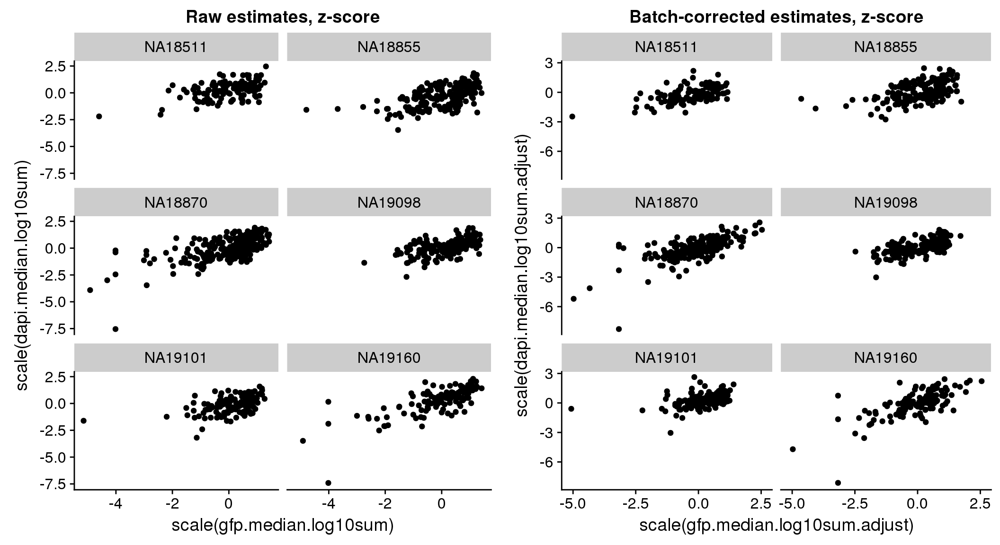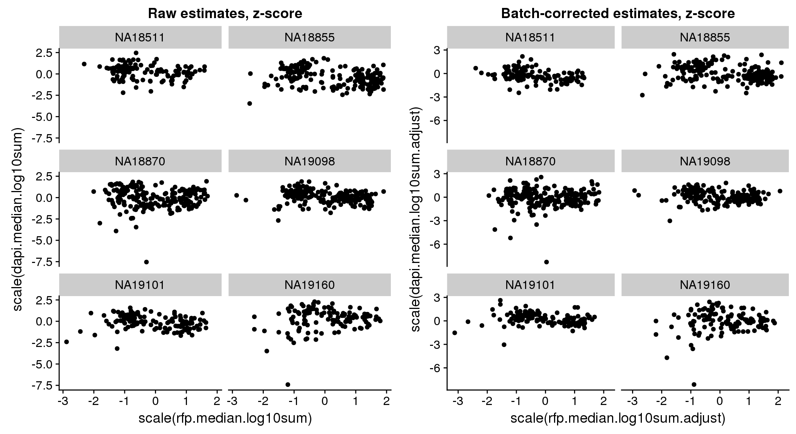
Output
Save corrected data to a temporary output folder.
saveRDS(pdata, file = "../output/images-normalize-anova.Rmd/pdata-adj.rds")Variation by image position
After correcting for plate effect, is there position effect on the plate that are at play?
Linear models controling for individual and plate effect show that image labels signficantly add to the variation in both GFP and RFP intensities, but not in DAPI (likelihood ratio test comparing model fit, and F test comparing variance explained)
Emprical analysis was done to describe the trend of intensity measurements by image label. Briefly, I assigned ranks to intensity values wiithin plate, and then compute the median ranks at each image position.
pdata.adj <- readRDS("../output/images-normalize-anova.Rmd/pdata-adj.rds")
library(stringr)
#--- RFP
lm.1 <- lm(gfp.median.log10sum.adjust ~ as.factor(chip_id) + as.factor(experiment) + as.factor(image_label), data = pdata.adj)
lm.2 <- lm(gfp.median.log10sum.adjust ~ as.factor(chip_id) + as.factor(experiment), data = pdata.adj)
summary(lm.1)$adj.r.squared[1] 0.047542summary(lm.2)$adj.r.squared[1] 0.00404751anova(lm.2, lm.1)Analysis of Variance Table
Model 1: gfp.median.log10sum.adjust ~ as.factor(chip_id) + as.factor(experiment)
Model 2: gfp.median.log10sum.adjust ~ as.factor(chip_id) + as.factor(experiment) +
as.factor(image_label)
Res.Df RSS Df Sum of Sq F Pr(>F)
1 969 106.879
2 874 92.191 95 14.688 1.4658 0.003756 **
---
Signif. codes: 0 '***' 0.001 '**' 0.01 '*' 0.05 '.' 0.1 ' ' 1# compare logliklihood of the two models
ll.1 <- logLik(lm.1)
ll.2 <- logLik(lm.2)
chisq <- -2*(-302.8776)-(-2*(-229.6979))
df <- 117-22
pchisq(chisq, df, lower.tail = FALSE)[1] 0.0005647567#--- RFP
lm.1 <- lm(rfp.median.log10sum.adjust ~ as.factor(chip_id) + as.factor(experiment) + as.factor(image_label), data = pdata.adj)
lm.2 <- lm(rfp.median.log10sum.adjust ~ as.factor(chip_id) + as.factor(experiment), data = pdata.adj)
summary(lm.1)$adj.r.squared[1] 0.03355844summary(lm.2)$adj.r.squared[1] 0.003931648anova(lm.2, lm.1)Analysis of Variance Table
Model 1: rfp.median.log10sum.adjust ~ as.factor(chip_id) + as.factor(experiment)
Model 2: rfp.median.log10sum.adjust ~ as.factor(chip_id) + as.factor(experiment) +
as.factor(image_label)
Res.Df RSS Df Sum of Sq F Pr(>F)
1 969 230.89
2 874 202.06 95 28.83 1.3127 0.02962 *
---
Signif. codes: 0 '***' 0.001 '**' 0.01 '*' 0.05 '.' 0.1 ' ' 1# compare logliklihood of the two models
ll.1 <- logLik(lm.1)
ll.2 <- logLik(lm.2)
chisq <- -2*(-684.1374)-2*(-618.1146)
df <- 117-22
pchisq(chisq, df, lower.tail = FALSE)[1] 0#--- DAPI
lm.1 <- lm(dapi.median.log10sum.adjust ~ as.factor(chip_id) + as.factor(experiment) + as.factor(image_label), data = pdata.adj)
lm.2 <- lm(dapi.median.log10sum.adjust ~ as.factor(chip_id) + as.factor(experiment), data = pdata.adj)
summary(lm.1)$adj.r.squared[1] -0.005130973summary(lm.2)$adj.r.squared[1] 0.004377971anova(lm.2, lm.1)Analysis of Variance Table
Model 1: dapi.median.log10sum.adjust ~ as.factor(chip_id) + as.factor(experiment)
Model 2: dapi.median.log10sum.adjust ~ as.factor(chip_id) + as.factor(experiment) +
as.factor(image_label)
Res.Df RSS Df Sum of Sq F Pr(>F)
1 969 37.275
2 874 33.942 95 3.3333 0.9035 0.7303# compare logliklihood of the two models
ll.1 <- logLik(lm.1)
ll.2 <- logLik(lm.2)
chisq <- -2*(218.539)-2*(264.9102)
df <- 117-22
pchisq(chisq, df, lower.tail = FALSE)[1] 1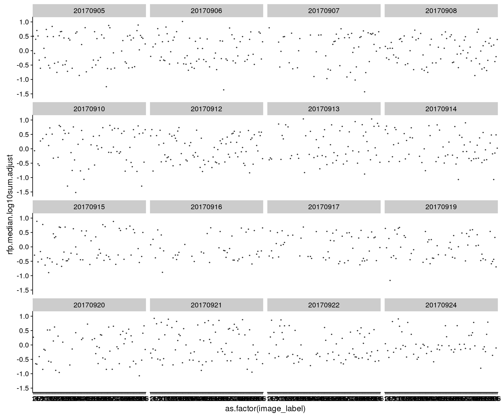
Ranking
Check intensity by well positions and image labels.
par(mfrow=c(2,1))
boxplot(rfp.median.log10sum.adjust ~ factor(well_row),
data=pdata.adj, ylab = "RFP")
abline(h=0, col="blue")
boxplot(gfp.median.log10sum.adjust ~ factor(well_row),
data=pdata.adj, ylab = "GFP")
abline(h=0, col="blue")
title(main = "Intensities by well row", outer=TRUE, line=-1)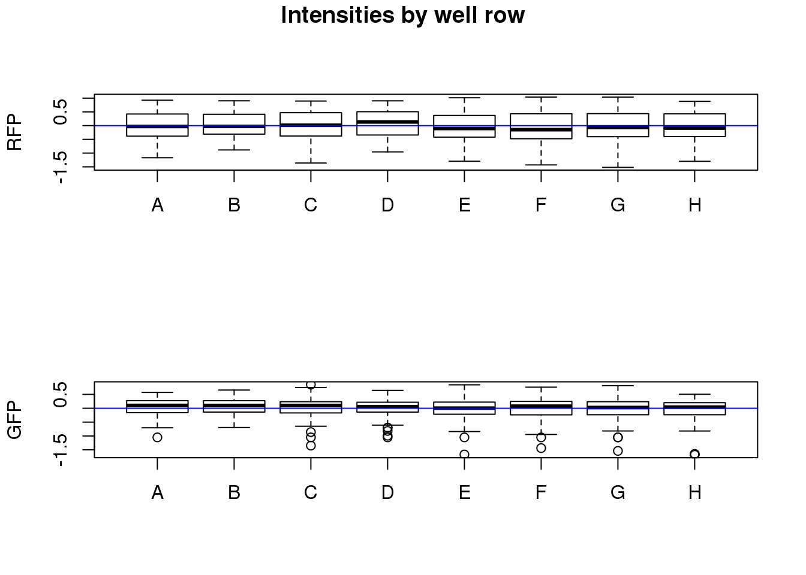
par(mfrow=c(2,1))
boxplot(rfp.median.log10sum.adjust ~ factor(well_col),
data=pdata.adj, ylab = "RFP")
abline(h=0, col="blue")
boxplot(gfp.median.log10sum.adjust ~ factor(well_col),
data=pdata.adj, ylab = "GFP")
abline(h=0, col="blue")
title(main = "Intensities by well column", outer=TRUE, line=-1)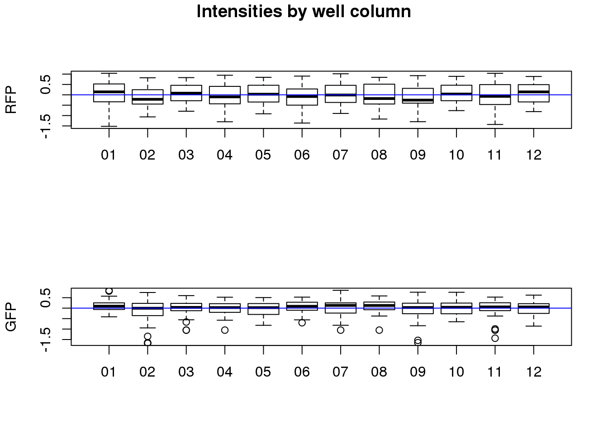
# by image label
tt.gfp.median <- pdata.adj %>% group_by(image_label) %>% summarize(., median(gfp.median.log10sum.adjust))
tt.rfp.median <- pdata.adj %>% group_by(image_label) %>% summarize(., median(rfp.median.log10sum.adjust))
tt <- data.frame(well=pdata.adj$well, image_label=pdata.adj$image_label)
tt <- tt[!duplicated(tt),]
colbrew <- brewer.pal(9, "Set1")
tt$cols <- rep(colbrew[9], 96)
tt$cols[which(tt$well %in% c("A03", "A02", "A01", "A09", "A08", "A07"))] <- colbrew[1]
tt$cols[which(tt$well %in% c("H03", "H02", "H01", "H09", "H08", "H07"))] <- colbrew[2]
tt$cols[which(tt$well %in% c("A06", "A05", "A04", "A12", "A11", "A10"))] <- colbrew[3]
tt$cols[which(tt$well %in% c("H06", "H05", "H04", "H12", "H11", "H10"))] <- colbrew[4]
tt <- tt[order(tt$image_label),]
ord.gfp <- as.character(tt.gfp.median$image_label[order(tt.gfp.median$`median(gfp.median.log10sum.adjust)`)])
ord.rfp <- as.character(tt.rfp.median$image_label[order(tt.rfp.median$`median(rfp.median.log10sum.adjust)`)])
par(mfrow=c(3,1))
plot(1:7, 1:7, pch="", axes=F, ann=F)
legend("center", legend = c("A_a", "H_a", "A_b", "H_b"), col=colbrew[c(1,2,3,4)],
pch=16)
boxplot(rfp.median.log10sum.adjust ~ factor(image_label, levels=ord.rfp),
data=pdata.adj, ylab = "RFP",
col=tt$cols[as.numeric(ord.rfp)])
abline(h=0, lwd=2, col="royalblue")
boxplot(gfp.median.log10sum.adjust ~ factor(image_label, levels=ord.gfp),
data=pdata.adj, ylab = "GFP",
col=tt$cols[as.numeric(ord.rfp)])
abline(h=0, lwd=2, col="royalblue")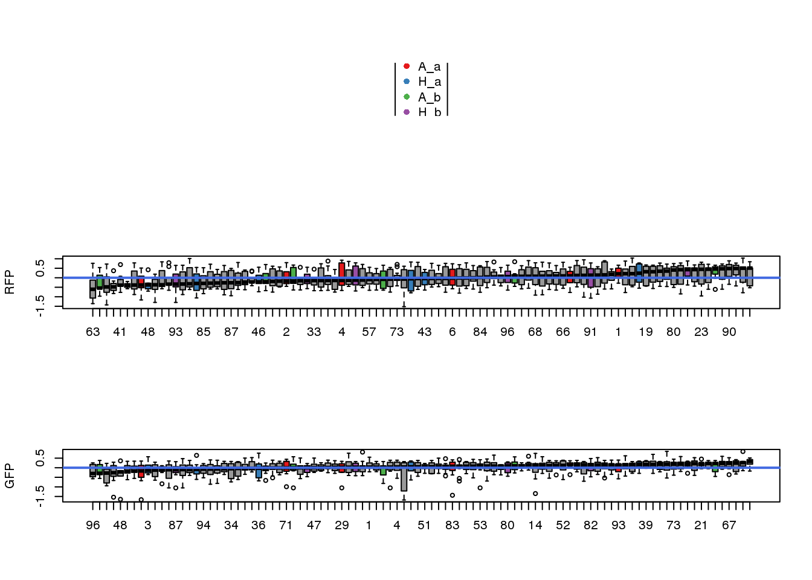
Output results to text file
write.table(data.frame(gfp.ord, rfp.ord),
file = "../output/images-normalize-anova.Rmd/intensity_order_by_position.txt",
sep ="\t", row.names = F, quote = F)ANOVA correction
pdata.adj$chip_id <- factor(pdata.adj$chip_id)
pdata.adj$experiment <- factor(pdata.adj$experiment)
pdata.adj$image_label <- factor(pdata.adj$image_label)
pdata.adj$rfp.median.log10sum.adjust2 <- pdata.adj$rfp.median.log10sum.adjust
pdata.adj$gfp.median.log10sum.adjust2 <- pdata.adj$gfp.median.log10sum.adjust
pdata.adj$dapi.median.log10sum.adjust2 <- pdata.adj$dapi.median.log10sum.adjust
## RFP
fit <- lm(rfp.median.log10sum.adjust ~ chip_id +
experiment + image_label,
data=pdata.adj)
fit.mns <- summary(lsmeans(fit, "image_label"))
fit.mns.tmp <- fit.mns[,c("image_label", "lsmean")]
labs <- unique(pdata.adj$image_label)
for (i in 1:length(labs)) {
lab <- as.character(labs[i])
ii_lab <- which(pdata.adj$image_label == lab)
est_lab <- fit.mns.tmp$lsmean[which(rownames(fit.mns.tmp)==lab)]
pdata.adj$rfp.median.log10sum.adjust2[ii_lab] <- (pdata.adj$rfp.median.log10sum.adjust[ii_lab] - est_lab)
}
## GFP
fit <- lm(gfp.median.log10sum.adjust ~ chip_id +
experiment + image_label,
data=pdata.adj)
fit.mns <- summary(lsmeans(fit, "image_label"))
fit.mns.tmp <- fit.mns[,c("image_label", "lsmean")]
labs <- unique(pdata.adj$image_label)
for (i in 1:length(labs)) {
lab <- as.character(labs[i])
ii_lab <- which(pdata.adj$image_label == lab)
est_lab <- fit.mns.tmp$lsmean[which(rownames(fit.mns.tmp)==lab)]
pdata.adj$gfp.median.log10sum.adjust2[ii_lab] <- (pdata.adj$gfp.median.log10sum.adjust[ii_lab] - est_lab)
}saveRDS(pdata.adj, file = "../output/images-normalize-anova.Rmd/pdata-adj.rds")Session information
R version 3.4.1 (2017-06-30)
Platform: x86_64-redhat-linux-gnu (64-bit)
Running under: Scientific Linux 7.2 (Nitrogen)
Matrix products: default
BLAS/LAPACK: /usr/lib64/R/lib/libRblas.so
locale:
[1] LC_CTYPE=en_US.UTF-8 LC_NUMERIC=C
[3] LC_TIME=en_US.UTF-8 LC_COLLATE=en_US.UTF-8
[5] LC_MONETARY=en_US.UTF-8 LC_MESSAGES=en_US.UTF-8
[7] LC_PAPER=en_US.UTF-8 LC_NAME=C
[9] LC_ADDRESS=C LC_TELEPHONE=C
[11] LC_MEASUREMENT=en_US.UTF-8 LC_IDENTIFICATION=C
attached base packages:
[1] parallel stats graphics grDevices utils datasets methods
[8] base
other attached packages:
[1] bindrcpp_0.2 stringr_1.2.0 ibd_1.2
[4] multcompView_0.1-7 lsmeans_2.27-61 car_2.1-6
[7] MASS_7.3-47 lpSolve_5.6.13 scales_0.5.0
[10] Biobase_2.38.0 BiocGenerics_0.24.0 RColorBrewer_1.1-2
[13] wesanderson_0.3.4 cowplot_0.9.2 ggplot2_2.2.1
[16] dplyr_0.7.4 data.table_1.10.4-3
loaded via a namespace (and not attached):
[1] zoo_1.8-1 splines_3.4.1 lattice_0.20-35
[4] colorspace_1.3-2 htmltools_0.3.6 yaml_2.1.16
[7] mgcv_1.8-17 survival_2.41-3 rlang_0.1.6
[10] pillar_1.1.0 nloptr_1.0.4 glue_1.2.0
[13] multcomp_1.4-8 bindr_0.1 plyr_1.8.4
[16] MatrixModels_0.4-1 munsell_0.4.3 gtable_0.2.0
[19] mvtnorm_1.0-7 coda_0.19-1 codetools_0.2-15
[22] evaluate_0.10.1 labeling_0.3 knitr_1.19
[25] SparseM_1.77 quantreg_5.35 pbkrtest_0.4-7
[28] TH.data_1.0-8 Rcpp_0.12.15 xtable_1.8-2
[31] backports_1.1.2 lme4_1.1-15 digest_0.6.15
[34] stringi_1.1.6 grid_3.4.1 rprojroot_1.3-2
[37] tools_3.4.1 sandwich_2.4-0 magrittr_1.5
[40] lazyeval_0.2.1 tibble_1.4.2 pkgconfig_2.0.1
[43] Matrix_1.2-10 estimability_1.2 assertthat_0.2.0
[46] minqa_1.2.4 rmarkdown_1.8 R6_2.2.2
[49] nnet_7.3-12 nlme_3.1-131 git2r_0.21.0
[52] compiler_3.4.1 This R Markdown site was created with workflowr